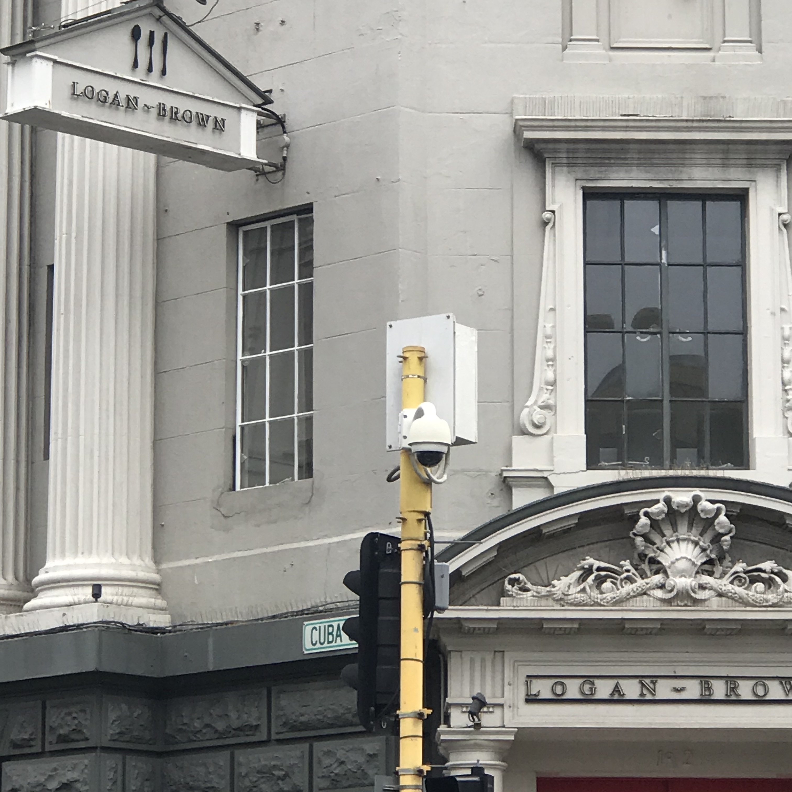
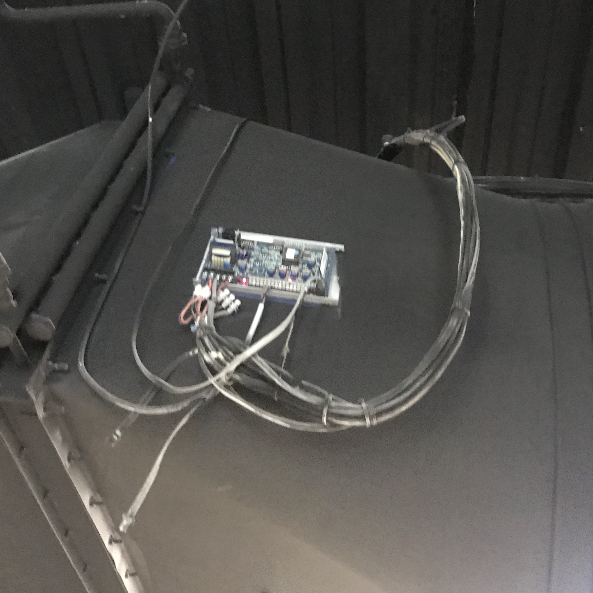
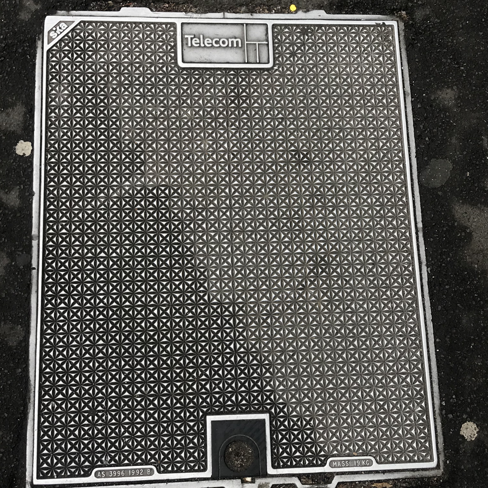

Types Of Networks in Wellington
Here are some examples of Wellington’s Networks:
This is an IP camera. It is a type of digital video camera that receives data and sends data via an IP network. They are used for surveillance and require only a local area network.
This is an example of what interior cable mounting looks like. This is often attached to the inside of buildings and then connected to cables that connect it to the rest of the area, on the outside.
Telco Pits used for service access points and telecommunications. The cables sit shallowly under the lid.
Satelites provides access to information via radio signals and can also be used in networks by retransmitting signals.